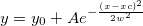

ガウスピーク関数の振幅バージョン
数: 4
パラメータの名前: y0, xc, w, A
意味: y0 = オフセット, xc = 中心, w = 幅, A = 振幅
下側境界: w > 0.0
上側境界: なし
サンプル曲線セクションの曲線を参照してください。
半値幅: FWHM = sqrt(ln(4)) * 2 * w
曲線下面積: Area = A * 2 * w * sqrt(PI / 2)
nlf_gaussamp(x,y0,xc,w,A)
FITFUNC\GAUSSAMP.FDF
Statistics, Spectroscopy, PFW, Peak Functions, Origin Basic Functions